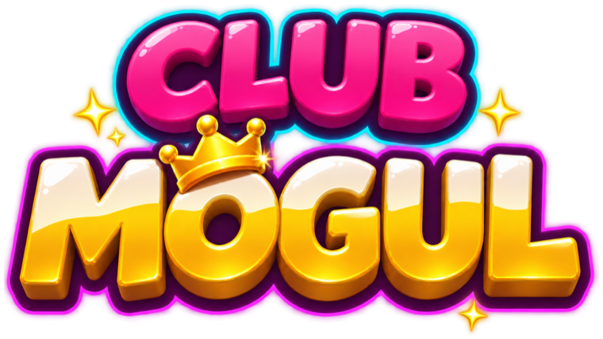
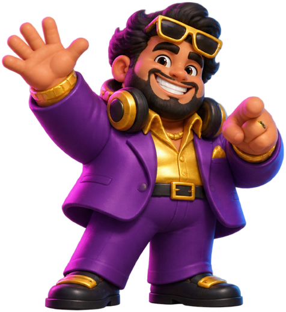

Build your nightclub DJ empireBaue dein Nachtclub-Imperium
Start with a sweaty basement party in Berlin and grow it into a club in orbit. An idle tycoon game for iPhone with original house music that grows with your club. Starte mit einer Kellerparty in Berlin und mach daraus einen Club im Orbit. Ein Idle-Tycoon für das iPhone mit eigener House-Musik, die mit deinem Club wächst.
- No ads
- Keine Werbung
- No tracking
- Kein Tracking
- Plays offline
- Offline spielbar
- Crates never sold
- Kisten nie käuflich

Build & upgrade
Bauen & verbessern
8 rooms per venue, managers who keep the party running and six venues from Berlin to orbit.
8 Räume pro Location, Manager, die die Party am Laufen halten, und sechs Locations von Berlin bis in den Orbit.
Hit the drop
Triff den Drop
Tap on the beat to build HYPE and unleash a BASS DROP with triple income.
Tippe im Takt, bau HYPE auf und entfessle einen BASS DROP mit dreifachen Einnahmen.
Collect 16 DJs
Sammle 16 DJs
Book headliners with unique perks, level them up and complete your collection.
Buche Headliner mit eigenen Vorteilen, verbessere sie und vervollständige deine Sammlung.
Help & FAQHilfe & FAQ
How do I restore my purchases?Wie stelle ich meine Käufe wieder her?
Open the SHOP tab and tap Restore Purchases at the bottom – or go to MORE → Settings → Restore Purchases. Use the same Apple ID you bought with. The two permanent purchases – VIP Membership and Club Manager – come back on every device. Gems, packs, bundles and boosts are used up when you get them (like coins in an arcade), so they can't be restored.
Öffne den Reiter SHOP und tippe ganz unten auf Käufe wiederherstellen – oder MEHR → Einstellungen → Käufe wiederherstellen. Nutze dieselbe Apple-ID wie beim Kauf. Die beiden dauerhaften Käufe – VIP-Mitgliedschaft und Club-Manager – kommen auf jedem Gerät zurück. Juwelen, Pakete, Bundles und Boosts werden beim Erhalt verbraucht (wie Münzen am Automaten) und lassen sich deshalb nicht wiederherstellen.
I bought gems but didn't get them.Ich habe Juwelen gekauft, aber nicht erhalten.
Close the game completely and open it again while you are online – unfinished purchases are delivered automatically on start. Purchases that wait for approval (for example "Ask to Buy") arrive as soon as they are approved. If anything is still missing, contact us with the date of the purchase.
Schließe das Spiel ganz und öffne es mit Internetverbindung erneut – nicht abgeschlossene Käufe werden beim Start automatisch gutgeschrieben. Käufe, die noch genehmigt werden müssen (z. B. „Kaufanfrage“), kommen an, sobald sie bestätigt sind. Fehlt danach noch etwas, melde dich bei uns mit dem Kaufdatum.
Where is my progress saved? Can I move to a new iPhone?Wo wird mein Fortschritt gespeichert? Kann ich auf ein neues iPhone wechseln?
Your progress is saved only on your iPhone – there is no account and no server. It is part of your normal iPhone backup (iCloud or computer), so setting up a new iPhone from a backup brings your club along. Deleting the app deletes the progress. VIP Membership and Club Manager can always be restored.
Dein Fortschritt wird nur auf deinem iPhone gespeichert – es gibt kein Konto und keinen Server. Er ist Teil deines normalen iPhone-Backups (iCloud oder Computer); richtest du ein neues iPhone aus einem Backup ein, kommt dein Club mit. Löschst du die App, ist der Fortschritt weg. VIP-Mitgliedschaft und Club-Manager lassen sich jederzeit wiederherstellen.
Can I buy crates? What are the odds?Kann man Kisten kaufen? Wie sind die Chancen?
No. Record crates and prize-wheel spins are only ever earned by playing – never sold, not for money, not for gems and not as part of the Club Pass Premium (its rewards are fixed: named DJ cards, gems and boosts). Everything you can buy is shown exactly before you buy it. The odds of every crate and of the wheel are shown in the game: DJS tab → "CRATE ODDS ⓘ", and the ⓘ button on the prize wheel.
Nein. Plattenkisten und Drehs am Glücksrad gibt es nur durchs Spielen – sie werden nie verkauft, weder für Geld noch für Juwelen und auch nicht im Club-Pass Premium (dessen Belohnungen stehen fest: bestimmte DJ-Karten, Juwelen und Boosts). Alles, was man kaufen kann, siehst du vor dem Kauf genau. Die Chancen jeder Kiste und des Glücksrads stehen im Spiel: Reiter DJS → „CHANCEN ⓘ“ und der ⓘ-Knopf am Glücksrad.
How do I turn notifications on or off?Wie schalte ich Mitteilungen ein oder aus?
In the game: MORE → Settings → Notifications. Or in the iOS Settings app → Club Mogul → Notifications. The game only uses a few local reminders (club full, daily gift, free boost) and never sends them at night.
Im Spiel: MEHR → Einstellungen → Mitteilungen. Oder in der iOS-App Einstellungen → Club Mogul → Mitteilungen. Das Spiel nutzt nur wenige lokale Erinnerungen (Club voll, Tagesgeschenk, Gratis-Boost) und schickt sie nie nachts.
I hear no music.Ich höre keine Musik.
Club Mogul respects the silent switch: flip the ring/silent switch (or Action button) to ring, turn the volume up and check MORE → Settings → Music. While another app plays music or a podcast, the game keeps its own soundtrack quiet so it never plays over yours (sound effects stay on) – pause the other app, or switch Music off and on again in MORE → Settings to hear both.
Club Mogul beachtet den Stumm-Schalter: Stell den Klingel-/Stumm-Schalter (oder die Aktionstaste) auf Klingeln, dreh die Lautstärke hoch und prüfe MEHR → Einstellungen → Musik. Solange eine andere App Musik oder einen Podcast abspielt, bleibt der Soundtrack des Spiels leise, damit er nie über deine Musik läuft (Soundeffekte bleiben an) – pausiere die andere App oder schalte die Musik unter MEHR → Einstellungen aus und wieder ein, um beides zu hören.
How do I get a refund?Wie bekomme ich eine Erstattung?
All payments are handled by Apple. Request a refund at reportaproblem.apple.com.
Alle Zahlungen wickelt Apple ab. Eine Erstattung beantragst du unter reportaproblem.apple.com.
How do I start over?Wie fange ich neu an?
MORE → Settings → Reset progress (you will be asked twice). VIP Membership and Club Manager stay yours; gems and other used-up items are reset with the progress.
MEHR → Einstellungen → Fortschritt zurücksetzen (du wirst zweimal gefragt). VIP-Mitgliedschaft und Club-Manager bleiben deine; Juwelen und andere verbrauchte Inhalte werden mit dem Fortschritt zurückgesetzt.
ContactKontakt
Found a bug, have an idea or a question about a purchase? Open an issue on GitHub (free GitHub account) – we read every message. Issues are public, so please don't post personal data such as your Apple ID or receipts.
Einen Fehler gefunden, eine Idee oder eine Frage zu einem Kauf? Eröffne ein Issue auf GitHub (kostenloses GitHub-Konto) – wir lesen jede Nachricht. Issues sind öffentlich, bitte poste deshalb keine persönlichen Daten wie deine Apple-ID oder Belege.
Open an issue on GitHubIssue auf GitHub eröffnenWho makes the gameAnbieter
Nick Linz, GermanyDeutschland
Contact:Kontakt: github.com/Septix414/last-exit-site/issues